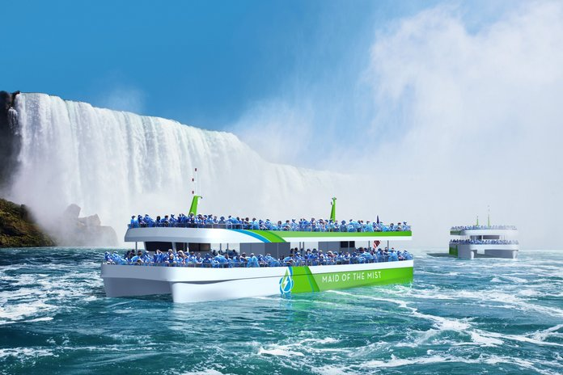
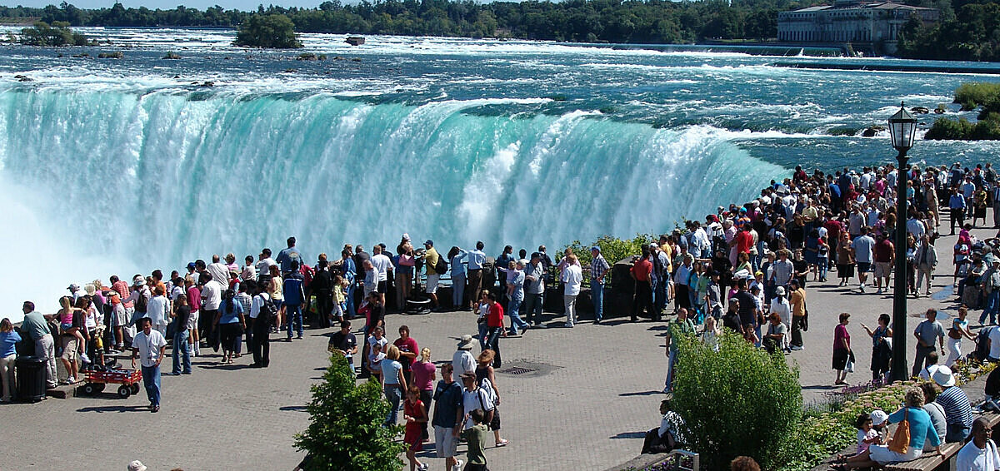

Tổng quan:
- Từ: Fairfax, VA Đến: Thác Niagara, NY (phía Hoa Kỳ) Khoảng cách: ~400–450 dặm
- Thời gian: ~7–8 giờ đi ô tô hoặc ~1,5 giờ đi máy bay (cộng thêm thời gian ở sân bay)
- Phương tiện đi lại tốt nhất: Ô tô nếu muốn linh hoạt hoặc máy bay se bị hạn chế về thời gian.
- Thời gian chuyến đi được đề xuất: 2–3 ngày.

Điểm đến nổi bật ở Thác Niagara, NY
- Maid of the Mist (Cô gái sương mù) – Đi thuyền vào thác
- Cave of the Winds (Động Gió) – thong qua Động Gió bạn có thể đi bộ ngay bên cạnh thác Bridal Veil
- Công viên Bang Thác Niagara – Đường mòn phong cảnh, ngắm cảnh miễn phí
- Tháp quan sát – Khung cảnh toàn cảnh
- Chiếu sáng ban đêm – Thác nước được thắp sáng bằng nhiều màu sắc mỗi đêm

🛏️ Khách sạn
- Nếu bạn đang tìm khách sạn gần Công viên Bang Niagara Falls (phía Mỹ). Dưới đây là một số lựa chọn khách sạn phù hợp chỉ cách thác một đoạn đi bộ ngắn:
- Comfort Inn The Pointe 1–2 phút Khách sạn gần nhất với lối vào công viên
- Hyatt Place Niagara Falls 5 phút Hiện đại, đi bộ được, gần các điểm tham quan
- Khách sạn Cambria Niagara Falls 6–8 phút Khách sạn phong cách, mới hơn
- Sheraton Niagara Falls 7 phút Rộng lớn với công viên nước trong nhà (tính thêm)
- Khách sạn Giacomo 6–7 phút Khách sạn boutique, được đánh giá cao

Lịch trình Gợi Ý 3 Ngày ở Thác Niagara, NY
- 📅 Ngày 1: Di chuyển + Đến nơi
Lái xe hoặc đi máy bay đến.
Nhận phòng khách sạn.
Đi bộ đến thác và ngắm đèn đêm - 📅 Ngày 2: Khám phá Thác
Sáng: Maid of the Mist + Đài quan sát
Bữa trưa: Niagara Grill hoặc Top of the Falls
Buổi chiều: Động Gió
Buổi tối: Hoàng hôn ở Đảo Goat + Pháo hoa - 📅 Ngày 3: Các chuyến tham quan tùy chọn hoặc Trở về
Thủy cung Niagara hoặc tham quan thành phố Buffalo
Bắt đầu lái xe/bay trở lại Fairfax
Mẹo du lịch ở Thác Niagara, NY
Ưu điểm & nhược điểm tại Thác Niagara (phía Mỹ):
- Thuyền Maid of the Mist khởi hành từ phía Hoa Kỳ.
- Từ phía Hoa Kỳ nhìn chung yên tĩnh và ít đông đúc hơn. Khách sạn + Ăn uống giá cả phải chăng hơn .
- Đỗ xe: Khoảng 10–25 đô la Mỹ/ngày.
- Từ phía Hoa Kỳ bạn không thể nhìn toàn cảnh đẹp nhất của toàn bộ thác (Thác Móng Ngựa + Thác Mỹ). Từ phía Canada: Bạn có thể nhìn toàn cảnh đẹp nhất của toàn bộ thác (Thác Móng Ngựa + Thác Mỹ).
- Từ phía Canada bạn có nhiều lựa chọn giải trí hơn: sòng bạc, nhà hàng, cuộc sống về đêm, khu vui chơi điện tử và khu vui chơi Clifton Hill. nhưng có thể đắt hơn. Phí/thuế du lịch: 10–15% được cộng vào hóa đơn ở nhiều nơi.
📝 Gợi ý:
- 💰 Ưu tiên ngân sách hay không cần hộ chiếu? Ở lại phía Hoa Kỳ.
- 🚶Bạn có thể đi bộ từ phía Mỹ sang phía Canada của Thác Niagara, nếu bạn có giấy tờ du lịch hợp lệ, và đây là một trong những cách tốt nhất để ngắm nhìn toàn cảnh thác nước.
- Các bước đi từ phía Mỹ sang phía Canada:
1. Bắt đầu từ khách sạn của bạn ở Mỹ (ví dụ, ở Niagara Falls, NY).
2. Đi bộ đến Cầu Cầu Vồng — cầu này nối liền Hoa Kỳ và Canada, mở cửa cho người đi bộ 24/7.
3. Qua kiểm soát biên giới Hoa Kỳ và Canada: Công dân Hoa Kỳ cần có hộ chiếu hợp lệ (hoặc thẻ hộ chiếu, hoặc bằng lái xe nâng cao).
Các quốc tịch khác cần hộ chiếu và có thể cần thị thực du lịch Canada hoặc eTA (tùy thuộc vào quốc tịch của bạn).
4. Trả phí đi bộ: khoảng 1 USD khi quay lại Mỹ (bạn sẽ cần tiền xu hoặc thẻ của Mỹ).